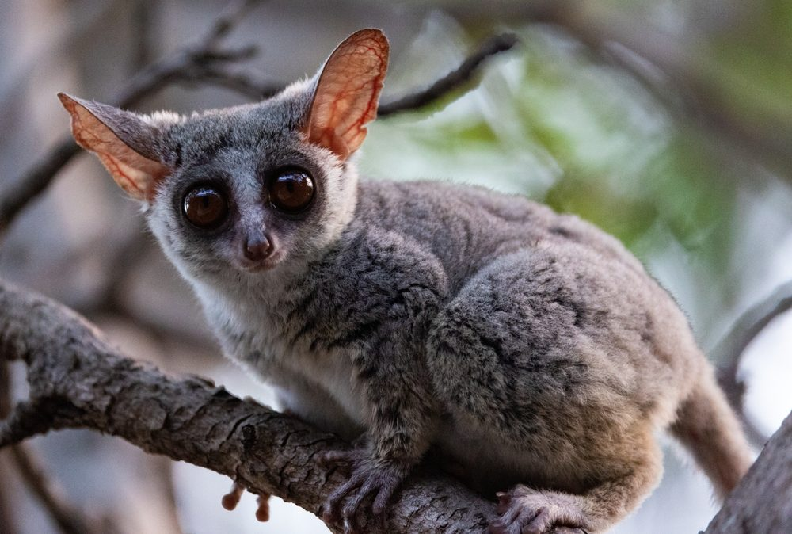

Zebra
Galago senegalski
Galago senegalski, znany również jako senegalski galago lub "senegal monkey", to mały, nocny ssak z rodziny galagowatych (Galagidae). Zamieszkuje głównie zachodnią i centralną Afrykę, w tym tereny leśne i sawannowe. Charakteryzuje się dużymi, okrągłymi oczami, które pozwalają mu widzieć w ciemnościach, oraz długimi nogami i ogonem, który pomaga mu w poruszaniu się po drzewach. Galago senegalski jest zwinny, doskonale skacze na duże odległości, a jego dieta składa się głównie z owadów, owoców i nektaru. Jest zwierzęciem społecznym, żyjącym w grupach rodzinnych.